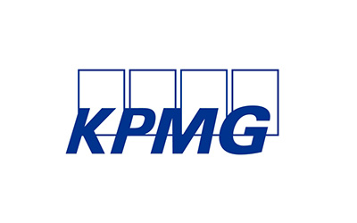

01Interactive Lectures
- Engage students through interactive lectures that blend theoretical concepts with real-world examples. Encourage active participation, questions, and discussions to enhance understanding.
Case Studies
- Integrate case studies derived from actual business scenarios to apply theoretical knowledge to practical situations. This hands-on approach fosters critical thinking and problem-solving skills.
Guest Lectures and Industry Insights
- Invite industry experts and professionals to deliver guest lectures, providing students with valuable insights into current industry practices, trends, and challenges.